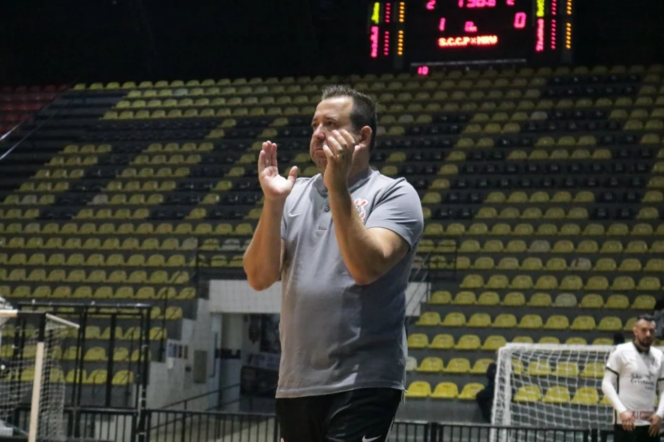

CORINTHIANS ENCARA O PINDAMONHANGABA PELO PAULISTA DE FUTSAL; VEJA DETALHES
|
O Corinthians volta à quadra pelo Campeonato Paulista de Futsal na noite desta sexta-feira. No Ginásio Wlamir Marques, a equipe alvinegra recebe o Pinda, às 19h, pela quinta rodada da segunda etapa da competição. O clube do Parque São Jorge vai transmitir pela Corinthians TV. |
Na sétima posição, o Timão vem de empate por 1 a 1 com o Magnus. Na atual etapa do torneio, a equipe de André Bié tem apenas quatro pontos somados nas quatro primeiras partidas, com uma vitória, um empate e duas derrotas. Os oito melhores colocados se classificam para as quartas de final. |